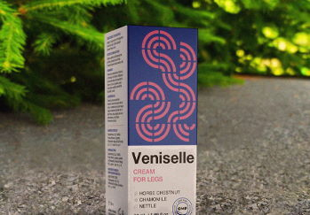

So werden Sie Krampfadern los: Dieses im Fernsehen nie besprochene Mittel hat mir geholfen

Alles begann mit gutartigen vergrößerten Venen, die in den ersten Monaten meiner Schwangerschaft auftraten. Mein Bauch wuchs ebenso wie mein Gewicht. Ehrlich gesagt habe ich mit nur 20 Kilogramm nicht einmal so viel zugenommen. Das zusätzliche Gewicht machte es mir schwer, mich körperlich zu betätigen. Meine Beine schmerzten und schwollen an. Kurz vor der Geburt waren meine Beine komplett mit blauen Venen übersät, sodass man sogar Drei gewinnt darauf spielen konnte.

Mein Arzt sagte mir, dass die Hälfte der schwangeren Frauen am Ende Krampfadern entwickeln. So funktioniert wohl der weibliche Körperbau. Die Salbe, die er mir empfahl, half kaum. Sie hat kaum gewirkt. Die engen Strümpfe linderten die Schmerzen ein wenig, aber auch nicht auf Dauer. Das Blut strömte weiterhin durch meine Beinvenen.
Nach der Geburt meines kleinen Davids musste ich die Behandlung meiner Beine pausieren. Mein Sohn war immer unruhig und mein Mann hatte viel auf der Arbeit zu tun. Ich hatte das Gefühl, dass meine Beine explodieren würden. Der Kleine ließ mich nie in Ruhe und wollte ständig getragen werden. Irgendwann fing er an, herumzukrabbeln, was es nur noch schwieriger machte, mit ihm Schritt zu halten. Ich konnte kaum winzeln, ohne dass er etwas wie Katzenstreu oder die Stiefel seines Vaters probierte. Es gab Tage, da konnte ich abends kaum die Füße hochlegen, weil sie vom Laufen so wund und steif waren.
Ich konnte nachts nicht schlafen. Ich drehte mich wegen des Schmerzes hin und her. Es fühlte sich so an, als ob meine Beine mit heißem Metall übersäht wären. Außerdem fühlte ich mich nicht wie eine normale Mutter, weil ich mit meinem Sohn nicht im Park spazieren gehen konnte. Hinzu kamen also auch die Schuldgefühle...
Inzwischen ist kein einziger Rock mehr in meinem Kleiderschrank, obwohl ich problemlos in jeden Minirock passe (ich habe dank guter Gene und eines aktiven Sohnes schnell wieder mein Normalgewicht erreicht). Es war mir wirklich peinlich, dass meine Beine mit blauen Knoten und Beulen übersät waren. Daher versteckte ich sie mit Hosen.

Wie erwartet konnten mir die Kliniken nicht helfen. Ich habe mich absolut gehen lassen... Meine Venen waren in einem schlechten Zustand. Der Arzt sagte, ich müsse im Krankenhaus bleiben und die Krampfadern operativ entfernen lassen. Sie hofften, dass es nach der OP besser sein würde. Es gäbe jeodch keine Garantie dafür, dass die Krampfadern nach der OP nicht wiederkämen.
Die Chance einer Genesung schien zu schwinden. Ich sah keine Hoffnung darin, mich operieren zu lassen und mein Leben zu riskieren, wenn es keine Garantie für die Lösung des Problems gab.
Mein Mann und ich haben lange diskutiert, was wir machen sollten. Am Ende entschieden wir uns, die Operation zu verschieben und stattdessen nach einer Behandlung zu suchen. Wir haben herumgefragt. Einer der Mitarbeiter meines Mannes sagte, seine Mutter sei von einer Heilkundlerin geheilt worden. Er hat uns mit ihr in Kontakt gebracht.
Wir haben eine lange Reise auf uns genommen, um sie zu treffen (600 km pro Strecke), aber genau in diesem Moment verstarb sie leider. Da sie keine Kinder hatte, überließ sie ihr Wissen ihrer Nachbarin. Sie war es also, die uns erzählte, dass meine Krampfadern mit Rosskastanie, Wermut und Kamille geheilt werden könnten.
Als wir wieder zurück nach Hause kamen, begann ich nach Produkten zu suchen, die mit diesen Inhaltsstoffen hergestellt wurden. Ich fand eine Creme, die aus all dem und anderen nützlichen Inhaltsstoffen zur Behandlung von Krampfadern bestand. Sie trug den Namen Veniselle . Ich habe sie bestellt und es hat sich gelohnt! Die alte Frau hatte Recht!

Nach nur 2 Tagen mit Veniselle fühlte ich, dass sich etwas an meinen Beinen tat. Es ist schwierig zu beschreiben. Ich fühlte überall Gänsehaut und die Schwellungen verschwanden.
Meine Beine hörten nach einer Woche auf zu schmerzen, selbst wenn ich Druck auf meine Krampfadern ausübte. Meine Beine fühlten sich nicht mehr schwer an und es wurde viel einfacher, sich zu bewegen. Ich konnte so schnell laufen, dass es sich anfühlte, als würde ich fliegen.


Ich verbrachte viel Zeit mit meinem Sohn im Park, was wir beide sehr genossen. Wir konnten den ganzen Tag spielen, sogar bis in den späten Abend hinein!


Ich kann nicht behaupten, dass die Creme schnell wirkt, aber sie wirkt. Diese Creme hat mir geholfen, meine Beine zu heilen. Die Krampfadern verschwanden und meine Adern hellten sich auf. Die Krampfadern sind verschwunden und ich kann wieder Miniröcke und Kleider tragen. Um diese Ergebnisse zu erzielen, brauchte es nur zwei Monate und 3 Packungen Veniselle .
PS: Es sind seitdem 8 Monate vergangen und ich habe seitdem kein Anzeichen von Krampfadern mehr gesehen! Ich hoffe das bleibt auch so.
Ich bin froh, dass ich mich nicht für eine Operation entschieden habe. Sie sollten dem auch nicht zustimmen! Was bringt es, solche Risiken einzugehen, wenn es eine gute Möglichkeit gibt, sie zu vermeiden?
Ich hoffe, meine Situation kann als klares Beispiel dafür dienen, dass die Gesundheit nicht ignoriert werden sollte. Ich habe keine Ahnung, wie schwer die Krankheit werden kann, aber ich beschloss, meine Geschichte trotzdem zu teilen.

Veniselle Mit Rabatt -50%

*Mit einer Bestellung auf der offiziellen Website garantieren Sie sich ein Standardprodukt mit hochwertigen Zutaten.
Bestellen
Spezialisten erklärten, was zu tun ist, wenn eines der folgenden Symptome auftritt: Schnelle Ermüdung der Beine, Schweregefühl in den Beinen, Schwellungen oder deutliche Krampfadern.

Das revolutionäre Produkt der Wissenschaftler zur Behandlung von Krampfadern soll einen Durchbruch in der Phlebologie bewirken und eine Heilung der Krankheit ermöglichen. Lesen Sie den Artikel.

Krampfadern können tödlich sein: Jedes Jahr kostet eine Thrombose, die mit Krampfadern in Verbindung steht, 1 % der Menschenleben.

14 Kommentare
Hallo! Ich war wirklich berührt, als ich deine Geschichte gelesen habe. Ich musste sogar ein bisschen weinen vor Freude! So sehr freue mich für dich. Pass auf dich auf! Ich werde diese Creme jedem empfehlen, der ein ähnliches Problem hat.
Ich bin 27 und leide bereits an Krampfadern im zweiten Stadium. Das einzige, was sich die Phlebologen einfallen lassen, ist eine Operation. Ich würde diese Methode stattdessen gerne ausprobieren. Vielleicht funktioniert sie ja auch bei mir.
Kauft Veniselle und ihr werdet es nicht bereuen! Kauft am besten gleich 2 Packungen, wenn ihr Krampfadern habt. Die Creme hilft nicht sofort, aber meine Krampfadern sind mit der Zeit verschwunden. Die Schwere in meinen Beinen ging zuerst weg. Ich habe sogar angefangen, 8‑10cm hohe Absätze zu tragen. Meine Beine hörten auf, anzuschwellen. Es dauerte ungefähr einen Monat, bis die Krampfadern verschwunden waren und 3 Monate, bis die Knoten und Beulen an meinen Beinen vollständig verschwunden waren (aber sie waren auch riesig). Ich kann diese Creme jedem empfehlen.
Ich weiß, was ihr meint. Ich bin Event-Gastgeberin. Das Herumbewegen bereitete mir früher viel Unbehagen. Ich nahm Tabletten und wickelte mein Bein in Kohl ein. Es war alles umsonst. Später habe ich herausgefunden, dass es Veniselle gab. Zunächst hat es auch nicht funktioniert. Dann dachte ich in Anbetracht meines Zustands, dass die Einnahme des Mittels zweimal täglich besser war und ich hatte Recht! Es hat mich zum Leben erweckt! Meine Behandlung dauerte am Ende etwas länger. Es hängt davon ab, wie schlimm der Zustand ist. Das sind meine Ergebnisse:
Meine Krampfadern sind ziemlich klar. Vor drei Jahren wurde ich an einem meiner Beine operiert. Jetzt nach der Geburt wurden die Adern im anderen Bein hell. Ich verstehe, dass eine Operation zu diesem Zeitpunkt keine Option ist, aber nichts, was der Arzt empfohlen hat, hat geholfen.
Bei mir ist das gleiche auch passiert. Meine Beine sind speziell während der Schwangerschaft aufgebläht. Meine Adern erstrecken sich über meine Beine. Ich nehme an, dass ich ein bisschen schuldig bin, weil ich 27 Kilo zugenommen habe. Ich habe vorher verschiedene Cremes gekauft, aber sie haben mir nicht gut getan.
Sie helfen nicht, weil man nie wirklich weiß, was in diesen Cremes drin ist. Das regionale Gesundheitssystem ist so korrupt! Pharmaunternehmen zahlen dafür, dass ihre Produkte verkauft werden, obwohl sie nur Schadstoffe und nichts Gutes verkaufen. Das Unternehmen, das am meisten zahlt, verkauft am Ende sein Produkt am meisten. Ich weiß, wovon ich rede. Meine Mutter starb wegen schlechter Medizin...und sie hätte leben können...
Was redest du da? Du kannst den Tod deiner Mutter nicht auf Apotheken schieben. Nichts für ungut, aber vielleicht hättest du sie in eine bessere Klinik bringen sollen?? Diese Creme, Veniselle, ist extrem gut! Ich habe gesehen, wie effektiv die Creme bei meiner Schwester funktioniert hat. Ihre Beine lassen sie wie ein junges Mädchen aussehen, dabei ist sie schon 48!
Ich habe mein Paket bekommen. Ich habe mir die Inhaltsstoffe durchgelesen und sie sind alle natürlich. Ich werde die Creme testen und später über meine Ergebnisse berichten. Ich hoffe es klappt!
Meine Tante wurde operiert, um verknotete Venen und Thrombosen zu entfernen. Es lief gut und alles schien in Ordnung zu sein, aber 2 Jahre später kam alles wieder.
Vielleicht war es nur ein inkompetenter Chirurg? Meine Schwester hat seit sieben Jahren nach ihrer Operation keine Probleme mehr. Wir hätten diese Operation vielleicht nicht gemacht, wenn wir vorher von dieser Creme gewusst hätten.
Ich habe schon von dieser Creme gehört. Sie soll ganz gut sein.
Ich nutze diese Creme namens Veniselle schon seit 3 Monaten. Glaubt es oder glaubt es nicht, aber meine Krampfadern, Entzündungen, Knoten und Schwellungen sind weg! Als Beweis habe ich Vorher- und Nachherbilder:
Danke für alle Bewertungen! Ich werde diese Creme gleich bestellen. Ich habe diese schreckliche Venenerkrankung an meinen Beinen lange genug ertragen und ich habe zu viel Angst, um die Operation durchzuführen :( Was, wenn sie es vermasseln? Ich habe Familie.
Bestellen Sie Veniselle mit einem Rabatt in Höhe von -50%
Bestellen